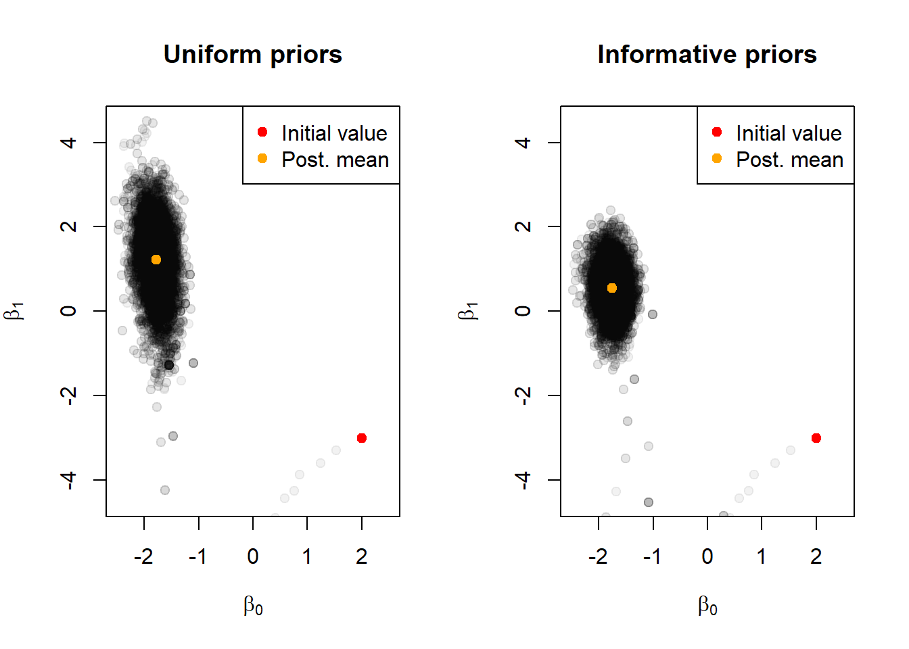

2 Lectura de Datos
Estos datos se utilizan comúnmente en análisis estadísticos, como modelos de regresión logística, para estudiar la relación entre la exposición a un factor y la probabilidad de desarrollar una enfermedad, en este caso, la leucemia. El análisis estadístico podría ayudar a determinar si la exposición está relacionada con un mayor riesgo de leucemia.
y = c(rep(1, 36), rep(0, 198)) # Casos de Leucemia
x = c(rep(1, 3), rep(0, 33), rep(1, 5), rep(0, 193)) # Exposicion2.1 Funciones Auxiliares
Las funciones auxiliares en este caso son un componente utilizado para abordar y analizar los casos y controles de la leucemia.
expit <- function(mu) 1/(1+exp(-mu))
message("La función expit toma un valor mu como entrada
y calcula la función sigmoidal o logística,
que es 1 / (1 + exp(-mu)).
La función sigmoidal toma un valor real mu
y lo transforma en un valor en el rango de 0 a 1.")
loglik = function(y,x,beta){
# Calcular la probabilidad logarítmica
lli = dbinom(y, 1, expit(beta[1] + x*beta[2]), log=TRUE)
sum(lli)
}
message("La función loglik calcula el logaritmo de la función
de verosimilitud (likelihood) de un modelo de regresión
logística en donde la verosimilitud de los datos se
asume como una distribución binomial y luego toma el
logaritmo de esa verosimilitud.")
riskdifference = function(y,x,beta){
# calcular una diferencia de riesgo
poprisk = 4.8/100000
popodds = poprisk/(1-poprisk)
studyodds = mean(y)/(1-mean(y))
r1 = expit(log(popodds/studyodds) + beta[1] + beta[2])
r0 = expit(log(popodds/studyodds) + beta[1])
mean(r1-r0)
}
message("riskdifference es la función que calcula la diferencia
de riesgo entre dos grupos (ejemplo; casos de leucemia).")2.2 Estimación de Máxima Verosimilitud
Se realizó un análisis de regresión logística por el método de maxima verosimilitud para estimar los parametros de \(\beta_0\) y \(\beta_1\). Luego es realizado una comparación de las estimaciones con el método de paseo aleatorio.
data = data.frame(leuk=y, magfield=x) #leuk variable de respuesta que indica un evento o no
mod = glm(leuk ~ magfield, family=binomial(), data=data) # Varaible predictoriia
summary(mod)$coefficients Estimate Std. Error z value Pr(>|z|)
(Intercept) -1.766183 0.188373 -9.375988 6.853094e-21
magfield 1.255357 0.754200 1.664488 9.601492e-02message("partiendo de que leuk es una variable de respuesta que indica evento o no
y magfield e la variabe predictoria lo que se hace es obtener los coeficientes
del modelo de regresión logística. Estos coeficientes incluyen el intercepto
(coeficiente beta0) y el coeficiente asociado con magfield (coeficiente beta1).")
beta1 = summary(mod)$coefficients[2,1]
se1 = summary(mod)$coefficients[2,2]
cat("\nCoeficiente beta de máxima verosimilitud (IC del 95%)\n",
round(c(beta=beta1, ll=beta1+se1*qnorm(0.025),
ul=beta1+se1*qnorm(0.975)), 2))
Coeficiente beta de máxima verosimilitud (IC del 95%)
1.26 -0.22 2.73cat("\nOdds ratio de máxima verosimilitud (IC 95%)\n",
round(exp(c(beta=beta1, ll=beta1+se1*qnorm(0.025),
ul=beta1+se1*qnorm(0.975))), 2))
Odds ratio de máxima verosimilitud (IC 95%)
3.51 0.8 15.39cat("\nDiferencia de riesgo de máxima verosimilitud\n",
round(c(rd_1000=riskdifference(y,x,mod$coefficients)*1000), 2))
Diferencia de riesgo de máxima verosimilitud
0.112.3 Metrópolis de paseo aleatorio
Aplicando el algoritmo metropolis de paseo aleatorio para muestrear la distribución posterior de los coeficientes del modelo de regresión logística binaria aplicado anteriormente. A medida que avanza el ciclo, se registran las muestras aceptadas de los coeficientes y las diferencias de riesgo en beta_post y rd, respectivamente.
# inicializacion
M=10000
set.seed(91828)
beta_post = matrix(nrow=M, ncol=2)
colnames(beta_post) = c('beta0', 'beta1')
accept = numeric(M)
rd = numeric(M)
beta_post[1,] = c(2,-3)
rd[1] = riskdifference(y,x,beta_post[1,])
accept[1] = 1
for(i in 2:M){
oldb = beta_post[i-1,]
prop = rnorm(2, sd=0.2)
newb = oldb+prop
num = loglik(y,x,newb)
den = loglik(y,x,oldb)
acceptprob = exp(num-den)
acc = (acceptprob > runif(1))
if(acc){
beta_post[i,] = newb
accept[i] = 1
}else{
beta_post[i,] = oldb
accept[i] = 0
}
rd[i] = 1000*riskdifference(y,x,beta_post[i,])
}Luego es realizado una simulación de cadenas de Markov Monte Carlo (MCMC) para estimar la distribución posterior de los coeficientes de regresión. Comienza inicializando varias variables, como el número de iteraciones M, semilla aleatoria, matrices para almacenar los coeficientes y la tasa de aceptación, y estableciendo un valor inicial para los coeficientes. Luego, se inicia un bucle que genera nuevas propuestas para los coeficientes a partir de la distribución normal y calcula la probabilidad de aceptación basada en el logaritmo de la verosimilitud de los nuevos coeficientes en comparación con los anteriores. Se utiliza un criterio de aceptación probabilístico, y si se acepta la nueva propuesta, se actualizan los coeficientes y se registra la aceptación. Si no se acepta, se mantienen los coeficientes anteriores y se registra la no aceptación. Además, se calcula y almacena el valor de la diferencia de riesgo multiplicada por 1000 en cada iteración. Este proceso se repite M veces para generar una muestra de la distribución posterior de los coeficientes y la diferencia de riesgo.
2.3.1 Inspección de la salida
[1] 0.6551 beta0 beta1
Min. :-2.518 Min. :-3.9483
1st Qu.:-1.902 1st Qu.: 0.7389
Median :-1.776 Median : 1.2292
Mean :-1.770 Mean : 1.1714
3rd Qu.:-1.651 3rd Qu.: 1.7004
Max. : 2.000 Max. : 3.9189 init = beta_post[1,]
postmean = apply(beta_post[-c(1:1000),], 2, mean)
cat("Media posterior\n", round(postmean, 2))Media posterior
-1.78 1.22plot(beta_post, pch=19, col=rgb(0,0,0,0.05), xlab=expression(beta[0]), ylab=expression(beta[1]), xlim=c(-2.5,2.5), ylim=c(-4.5,4.5))
points(init[1], init[2], col="red", pch=19)
points(postmean[1], postmean[2], col="orange", pch=19)
legend("topright", col=c("red", "orange"), legend=c("Initial value", "Post. mean"), pch=19)


Los gráficos anteriores nos proporcionan una forma visual de seguir cómo cambia el valor de beta1, que es el parámetro clave en este modelo estadístico(exposición), a medida que avanzamos en nuestros cálculos. Tenemos dos líneas en cada gráfico: una para el método “Rand. walk” (caminata aleatoria) y otra para “Guided” (guiado).
En el primer gráfico, nos enfocamos en las primeras 200 iteraciones. Las líneas que representan “Rand. walk” se muestran en un color oscuro, mientras que las de “Guided” se muestran en un color más claro.
El segundo gráfico se centra en las últimas 200 iteraciones de nuestros cálculos.
Estos gráficos nos ayudan a entender cómo las cadenas de números evolucionan y se estabilizan a medida que avanzamos. Nos ayudan a evaluar si los métodos utilizados en los códigos anteriores están funcionando de manera efectiva y si las estimaciones que obtenemos son confiables y consistentes.
2.4 Metrópolis guiada
Este código implementa un algoritmo de Metropolis-Hastings para explorar el espacio de parámetros de un modelo estadístico y estimar la distribución posterior de los parámetros \(\beta_0\) y \(\beta_1\), así como calcular el riesgo diferencial en cada iteración. La dirección en la que se generan las propuestas se invierte periódicamente para mejorar la exploración del espacio de parámetros.
# inicializacion
M=10000
set.seed(91828)
beta_post_guide = matrix(nrow=M, ncol=2)
colnames(beta_post_guide) = c('beta0', 'beta1')
accept = numeric(M)
rd_guide = numeric(M)
beta_post_guide[1,] = c(2,-3)
rd_guide[1] = riskdifference(y,x,beta_post_guide[1,])
accept[1] = 1
dir = 1
for(i in 2:M){
oldb = beta_post_guide[i-1,]
prop = dir*abs(rnorm(2, sd=0.2))
newb = oldb+prop
num = loglik(y,x,newb)
den = loglik(y,x,oldb)
acceptprob = exp(num-den)
acc = (acceptprob > runif(1))
if(acc){
beta_post_guide[i,] = newb
accept[i] = 1
}else{
beta_post_guide[i,] = oldb
accept[i] = 0
dir = dir*-1
}
rd_guide[i] = 1000*riskdifference(y,x,beta_post_guide[i,])
}
postmean = apply(beta_post_guide[-c(1:1000),], 2, mean)
cat("Media posterior, guiada\n", round(postmean, 2))Media posterior, guiada
-1.8 1.412.5 Contraste de salida con caminata aleatoria
col1 = rgb(0,0,0,.5)
col2 = rgb(1,0,0,.35)
par(mfcol=c(1,2))
#trace plots
plot(beta_post[1:200,2], type='l', ylab=expression(beta[1]), xlab="Iteration", ylim=c(-4, 4), col=col1)
lines(beta_post_guide[1:200,2], col=col2)
legend("topright", lty=1, col=c(col1, col2), legend=c("Rand. walk", "Guided"))
plot(9800:10000, beta_post[9800:10000,2], type='l', ylab=expression(beta[1]), xlab="Iteration", ylim=c(-4, 4), col=col1)
lines(9800:10000, beta_post_guide[9800:10000,2], col=col2)
legend("topright", lty=1, col=c(col1, col2), legend=c("Rand. walk", "Guided"))
# density plots
plot(density(beta_post_guide[-c(1:1000),2]), col=col2, xlab=expression(beta[1]), ylab="Density", main="")
lines(density(beta_post[-c(1:1000),2]), col=col1)
legend("bottomright", lty=1, col=c(col1, col2), legend=c("Rand. walk", "Guided"))
plot(density(rd_guide[-c(1:1000)]), xlab="RD*1000", ylab="Density", main="", col=col2)
lines(density(rd[-c(1:1000)]), col=col1)
legend("topright", lty=1, col=c(col1, col2), legend=c("Rand. walk", "Guided"))Los gráficos de densidad obtenidos muestran las distribuciones de probabilidad de los datos de beta1 uno generado por el método Metropolis-Hastings (Random Walk) y otro por el método Metropolis-Guided. En el primer gráfico, se compara la densidad de la variable beta[1] entre ambas cadenas, donde "col1" representa la cadena Metropolis-Hastings y "col2" la cadena Metropolis-Guided.
El segundo gráfico muestra la densidad de la variable "RD" multiplicada por 1000, y nuevamente compara las dos cadenas.
Con esto podemos visualizar cómo difieren las distribuciones de probabilidad entre los dos métodos y evaluar si el método Metropolis-Guided logra converger hacia una distribución más centrada en comparación con Metropolis-Hastings. Basicamente lo que hace es evaluar la eficiencia de ambos metodos e inferir cual podría ser más certero a la hora de eficiencia y convergencia en sus estimaciones.
2.6 Algoritmo de metrópolis guiado y adaptativo
Similar al caso anterior también se implementa un algoritmo de Metropolis-Hastings para estimar parámetros de un modelo estadístico. Sin embargo, este código agrega la adaptación de la desviación estándar de las propuestas de parámetros.
# initialize
M=10000
burnin=1000
set.seed(91828)
beta_post_adaptguide = matrix(nrow=M+burnin, ncol=2)
colnames(beta_post_adaptguide) = c('beta0', 'beta1')
accept = numeric(M+burnin)
rd_adaptguide = numeric(M+burnin)
beta_post_adaptguide[1,] = c(2,-3)
rd_adaptguide[1] = riskdifference(y,x,beta_post[1,])
accept[1] = 1
prop.sigma = c(0.2, 0.2)
dir = 1
for(i in 2:(M+burnin)){
if((i < burnin) & (i > 25)){
prop.sigma = apply(beta_post_adaptguide[max(1, i-100):(i-1),], 2, sd)
}
oldb = beta_post_adaptguide[i-1,]
prop = dir*abs(rnorm(2, sd=prop.sigma))
newb = oldb+prop
num = loglik(y,x,newb)
den = loglik(y,x,oldb)
acceptprob = exp(num-den)
acc = (acceptprob > runif(1))
if(acc){
beta_post_adaptguide[i,] = newb
accept[i] = 1
}else{
beta_post_adaptguide[i,] = oldb
accept[i] = 0
dir = dir*-1
}
rd_adaptguide[i] = 1000*riskdifference(y,x,beta_post_adaptguide[i,])
}
postmean = apply(beta_post_adaptguide[-c(1:1000),], 2, mean)
cat("Media posterior, guiada y adaptativa\n", round(postmean, 2))Media posterior, guiada y adaptativa
-1.78 1.22Adaptación de la desviación estándar de las propuestas:
En cada iteración (después de la fase de “quemado”), se adapta la desviación estándar de las propuestas (prop.sigma) basándose en las últimas 100 observaciones de beta_post_adaptguide. Esto ayuda a ajustar la amplitud de las propuestas de manera adaptativa para explorar mejor el espacio de parámetros.
En cada iteración, se genera una nueva propuesta (newb) añadiendo ruido aleatorio a los parámetros anteriores (oldb) en función de la desviación estándar adaptada prop.sigma.
2.7 Salida contrastante
col1 = rgb(0,0,0,.5)
col2 = rgb(1,0,0,.35)
par(mfcol=c(1,2))
#trace plots
plot(beta_post[1:200,2], type='l', ylab=expression(beta[1]), xlab="Iteration", ylim=c(-4, 4), col=col1)
lines(beta_post_adaptguide[1:200,2], col=col2)
legend("topright", lty=1, col=c(col1, col2), legend=c("Rand. walk", "Guided, adaptive"))
plot(9800:10000, beta_post[9800:10000,2], type='l', ylab=expression(beta[1]), xlab="Iteration", ylim=c(-4, 4), col=col1)
lines(9800:10000, beta_post_adaptguide[9800:10000,2], col=col2)
legend("topright", lty=1, col=c(col1, col2), legend=c("Rand. walk", "Guided, adaptive"))
# density plots
plot(density(beta_post_adaptguide[-c(1:1000),2]), col=col2, xlab=expression(beta[1]), ylab="Density", main="")
lines(density(beta_post[-c(1:1000),2]), col=col1)
legend("bottomright", lty=1, col=c(col1, col2), legend=c("Rand. walk", "Guided, adaptive"))
plot(density(rd_adaptguide[-c(1:1000)]), xlab="RD*1000", ylab="Density", main="", col=col2)
lines(density(rd[-c(1:1000)]), col=col1)
legend("topright", lty=1, col=c(col1, col2), legend=c("Rand. walk", "Guided, adaptive"))
Los gráficos resultantes permiten comparar las dos cadenas de Markov en función de sus primeras 200 iteraciones, mostrando cómo difieren a lo largo de este período.
2.8 Algoritmo de metrópolis guiado y adaptativo utilizando priores normales
Este es una variación del algoritmo de Metropolis-Hastings que considera tanto la función de verosimilitud como las distribuciones de prioridad en los cálculos, y muestra la media posterior estimada después de la fase de “burn-in”.
# inicializacion
M=10000
burnin=1000
set.seed(91828)
beta_post_adaptguide2 = matrix(nrow=M+burnin, ncol=2)
colnames(beta_post_adaptguide2) = c('beta0', 'beta1')
accept = numeric(M+burnin)
rd_adaptguide2 = numeric(M+burnin)
beta_post_adaptguide2[1,] = c(2,-3)
rd_adaptguide2[1] = riskdifference(y,x,beta_post[1,])
accept[1] = 1
prop.sigma = c(0.2, 0.2)
dir = 1
for(i in 2:(M+burnin)){
if((i < burnin) & (i > 25)){
prop.sigma = apply(beta_post_adaptguide2[max(1, i-100):(i-1),], 2, sd)
}
oldb = beta_post_adaptguide2[i-1,]
prop = dir*abs(rnorm(2, sd=prop.sigma))
newb = oldb+prop
num = loglik(y,x,newb) + dnorm(newb[1], mean=0, sd=sqrt(100), log=TRUE) + dnorm(newb[2], mean=0, sd=sqrt(0.5), log=TRUE)
den = loglik(y,x,oldb) + dnorm(oldb[1], mean=0, sd=sqrt(100), log=TRUE) + dnorm(oldb[2], mean=0, sd=sqrt(0.5), log=TRUE)
acceptprob = exp(num-den)
acc = (acceptprob > runif(1))
if(acc){
beta_post_adaptguide2[i,] = newb
accept[i] = 1
}else{
beta_post_adaptguide2[i,] = oldb
accept[i] = 0
dir = dir*-1
}
rd_adaptguide2[i] = 1000*riskdifference(y,x,beta_post_adaptguide2[i,])
}
postmean = apply(beta_post_adaptguide2[-c(1:1000),], 2, mean)
cat("Media posterior, guiada y adaptativa\n", round(postmean, 2))Media posterior, guiada y adaptativa
-1.75 0.542.8.1 Inspeccion de salida
[1] 0.5552727init = beta_post_adaptguide[1,]
postmean = apply(beta_post_adaptguide[-c(1:1000),], 2, mean)
cat("Media posterior, priores uniformes\n", round(postmean, 2))Media posterior, priores uniformes
-1.78 1.22init2 = beta_post_adaptguide2[1,]
postmean2 = apply(beta_post_adaptguide2[-c(1:1000),], 2, mean)
cat("Media posterior, previas normales informativas\n", round(postmean2, 2))Media posterior, previas normales informativas
-1.75 0.54par(mfcol=c(1,2))
plot(beta_post_adaptguide, pch=19, col=rgb(0,0,0,0.05), xlab=expression(beta[0]), ylab=expression(beta[1]), xlim=c(-2.5,2.5), ylim=c(-4.5,4.5), main="Uniform priors")
points(init[1], init[2], col="red", pch=19)
points(postmean[1], postmean[2], col="orange", pch=19)
legend("topright", col=c("red", "orange"), legend=c("Initial value", "Post. mean"), pch=19)
plot(beta_post_adaptguide2, pch=19, col=rgb(0,0,0,0.05), xlab=expression(beta[0]), ylab=expression(beta[1]), xlim=c(-2.5,2.5), ylim=c(-4.5,4.5), main="Informative priors")
points(init2[1], init2[2], col="red", pch=19)
points(postmean2[1], postmean2[2], col="orange", pch=19)
legend("topright", col=c("red", "orange"), legend=c("Initial value", "Post. mean"), pch=19)
par(mfcol=c(1,2))
plot(beta_post_adaptguide[,2], type='l', ylab=expression(beta[1]), xlab="Iteration", ylim=c(-4, 4))
plot(beta_post_adaptguide2[,2], type='l', ylab=expression(beta[1]), xlab="Iteration", ylim=c(-4, 4))plot(density(beta_post_adaptguide[-c(1:1000),2]), xlab=expression(beta[1]), ylab="Density", main="", xlim=c(-4, 4))plot(density(beta_post_adaptguide2[-c(1:1000), 2]), xlab=expression(beta[1]), ylab="Density", main="", xlim=c(-4, 4))par(mfcol=c(2,1))
plot(rd_adaptguide, type='l', ylab="RD*1000", xlab="Iteration", ylim=c(-.2, .5))
plot(rd_adaptguide2, type='l', ylab="RD*1000", xlab="Iteration", ylim=c(-.2, .5))
plot(density(rd_adaptguide[-c(1:1000)]), xlab=expression(beta[1]), ylab="Density", main="", xlim=c(-.2, .5))
Los gráficos resultantes ilustran la distribución posterior de los parámetros beta0 y beta1 en dos contextos diferentes de estimación.
En el primer gráfico, donde se aplican priors uniformes, se presentan puntos dispersos en un plano bidimensional que reflejan la probabilidad conjunta de los parámetros.
El segundo gráfico utiliza priors informativos y muestra una distribución posterior similar, pero con información previa incorporada en la estimación.
Tambien estos gráficos muestran cómo cambian las estimaciones del parámetro beta1 a lo largo de múltiples iteraciones en dos enfoques de Muestreo de Cadenas de Markov Monte Carlo (MCMC). Basicamente lo que nos muestran estos gráficos es cómo las estimaciones de beta1 se estabilizan a medida que se ejecutan más iteraciones, haciendo las estimaciones más precisas y fiables.